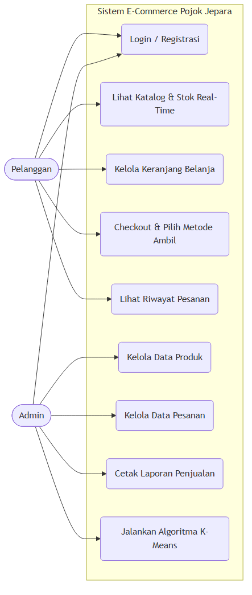
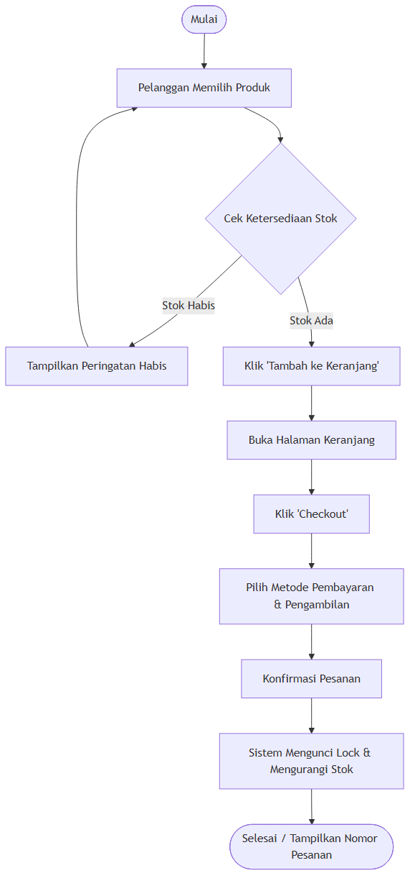
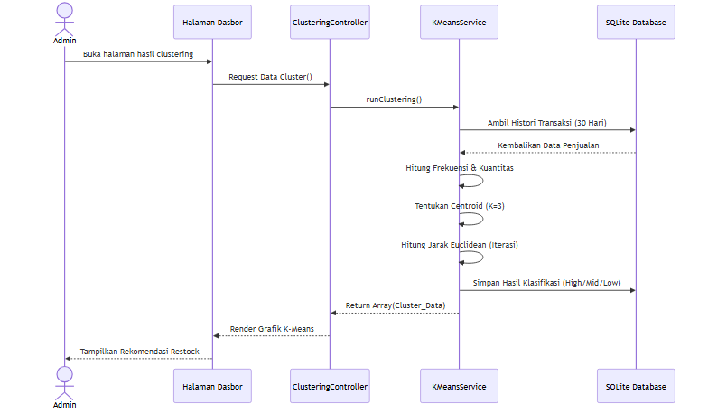
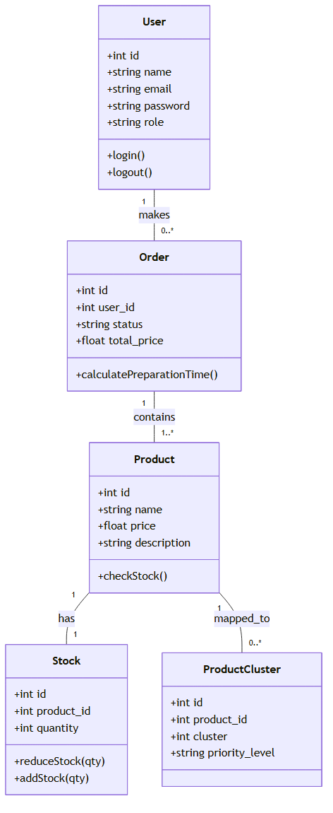

BAB I
DOKUMEN ANALISIS KEBUTUHAN
1.1. Deskripsi Sistem
Sistem yang dikembangkan adalah Aplikasi E-Commerce Berbasis Web untuk Toko Grosir Pojok Jepara. Aplikasi ini berfokus pada fitur "Visibilitas Stok Real-Time" yang mengizinkan pedagang melihat ketersediaan barang secara pasti (transparan) sebelum melakukan pemesanan online. Sistem ini mengimplementasikan satu algoritma wajib yaitu K-Means Clustering untuk memecahkan permasalahan manajemen stok (membantu admin merekomendasikan/memprioritaskan kategori produk mana yang perlu distok berdasarkan histori pembelian pelanggan).
1.2. Identifikasi Aktor
Terdapat dua aktor utama yang berinteraksi dengan sistem:
- Pelanggan (Customer): Pengguna yang dapat melihat katalog, memasukkan barang ke keranjang, melakukan checkout, dan melacak pesanan.
- Administrator (Admin): Pengelola sistem yang memiliki hak akses penuh untuk mengelola pengguna, produk, transaksi, stok, dan melihat hasil pengelompokan algoritma.
1.3. Kebutuhan Fungsional (Functional Requirements)
Kebutuhan fungsional dijabarkan berdasarkan ketentuan fitur minimal aplikasi:
- Manajemen Pengguna: Sistem menyediakan fitur Registrasi, Login, dan Logout menggunakan Laravel Breeze.
- Manajemen Produk: Sistem mengizinkan Admin untuk Menambah, Mengedit, Menghapus, dan Melihat Daftar Produk.
- Keranjang Belanja: Pelanggan dapat Menambah produk ke keranjang, Menghapus item, dan melakukan Checkout (BOPIS/Ambil di toko).
- Transaksi: Sistem memproses Input Pesanan, menyimpan Riwayat Transaksi, dan memperbarui Status Pesanan beserta penghitung waktu mundur (countdown).
- Dashboard Admin: Mengelola produk, pesanan, menghasilkan Laporan Penjualan, dan mengontrol ketersediaan stok aktual.
- Implementasi Algoritma: Sistem menjalankan algoritma K-Means Clustering untuk mengelompokkan produk menjadi 3 cluster (Tinggi, Sedang, Rendah) berdasarkan frekuensi transaksi pelanggan untuk merekomendasikan pasokan.
1.4. Kebutuhan Non-Fungsional (Non-Functional Requirements)
- Keamanan (Security): Otentikasi sandi terenkripsi (Bcrypt) dan implementasi Database Transaction untuk mencegah Race Condition saat pengurangan stok.
- Kinerja (Performance): Proses pengelompokan K-Means diproses secara asinkron atau menggunakan indeks database (SQLite) agar tidak membebani server.
- Antarmuka (Usability): Desain antarmuka dibuat responsif agar dapat diakses oleh pelanggan melalui perangkat mobile (ponsel) maupun PC desktop.
BAB II
UNIFIED MODELING LANGUAGE (UML)
screenshoot/. Buka file HTML ini di Microsoft Word melalui File > Open untuk melihat semua diagram.
2.1. Use Case Diagram

Gambar 2.1: Use Case Diagram Sistem E-Commerce Pojok Jepara
2.2. Activity Diagram (Proses Keranjang hingga Checkout)

Gambar 2.2: Activity Diagram - Proses Keranjang hingga Checkout
2.3. Sequence Diagram (Implementasi K-Means Clustering)

Gambar 2.3: Sequence Diagram - Implementasi K-Means Clustering
2.4. Class Diagram

Gambar 2.4: Class Diagram Sistem
BAB III
IMPLEMENTASI SISTEM
3.1. Lingkungan Pengembangan (Source Code)
Sistem dibangun menggunakan framework Laravel (PHP) dengan arsitektur MVC (Model-View-Controller).
Logika utama bisnis seperti pengurangan stok dan perhitungan algoritma K-Means dipisahkan ke dalam Service Layer (contohnya StockService.php dan KMeansService.php) agar pengendali (Controller) tetap efisien.
3.2. Implementasi Database
Sistem menggunakan basis data SQLite. Basis data dirancang dengan memanfaatkan fitur Migration dari Laravel. Terdapat tabel utama seperti users, products, stocks, orders, dan tabel khusus product_clusters untuk menampung output perhitungan algoritma pengelompokan.
3.3. Screenshot Program

Gambar 3.1: Halaman Katalog Produk

Gambar 3.2: Halaman Login

Gambar 3.3: Halaman Registrasi

Gambar 3.4: Halaman Keranjang Belanja
.png)
Gambar 3.5: Fitur Keranjang dan Checkout
.png)
Gambar 3.6: Detail Pesanan Pelanggan

Gambar 3.7: Fitur Dasbor Administrator

Gambar 3.8: Halaman Manajemen Produk

Gambar 3.9: Pengelolaan Pesanan oleh Admin

Gambar 3.10: Laporan Penjualan dan Stok

Gambar 3.11: Implementasi Wajib (Algoritma K-Means Clustering)
BAB IV
PENGUJIAN SISTEM
4.1. Skenario Pengujian
Pengujian dilakukan secara fungsional (functional testing) menggunakan metode Black Box Testing, yaitu pengujian berdasarkan fungsi dan keluaran sistem tanpa melihat kode program di dalamnya. Pengujian berfokus pada dua peran utama, yaitu Pelanggan dan Administrator.
4.2. Hasil Pengujian Fungsional
Berikut adalah hasil pengujian terhadap seluruh fitur wajib yang telah diimplementasikan:
| No. | Fitur yang Diuji | Skenario | Hasil |
|---|---|---|---|
| 1 | Registrasi & Login | Pelanggan mendaftar akun baru dan masuk ke sistem | ✓ Berhasil |
| 2 | Keranjang Belanja | Pelanggan menambah produk ke keranjang dan melakukan checkout | ✓ Berhasil |
| 3 | Visibilitas Stok Real-Time | Stok berkurang di dasbor admin saat pelanggan menyelesaikan pesanan | ✓ Berhasil |
| 4 | Countdown Timer BOPIS | Sistem menampilkan estimasi waktu persiapan barang setelah checkout | ✓ Berhasil |
| 5 | Manajemen Pesanan (Admin) | Admin mengubah status pesanan dari "Diproses" menjadi "Selesai" | ✓ Berhasil |
| 6 | Algoritma K-Means Clustering | Sistem mengelompokkan produk menjadi 3 cluster (Tinggi, Sedang, Rendah) berdasarkan data histori penjualan | ✓ Berhasil |
4.3. Hasil Pengujian Algoritma K-Means
Algoritma K-Means diuji menggunakan data histori transaksi 30 hari terakhir. Sistem berhasil membagi produk ke dalam 3 cluster setelah beberapa iterasi perhitungan. Produk pada cluster Tinggi (High) menjadi rekomendasi prioritas utama untuk segera dilakukan pengisian stok (restock). Hasil pengelompokan ini ditampilkan secara visual pada Dasbor Administrator untuk mendukung pengambilan keputusan operasional toko.